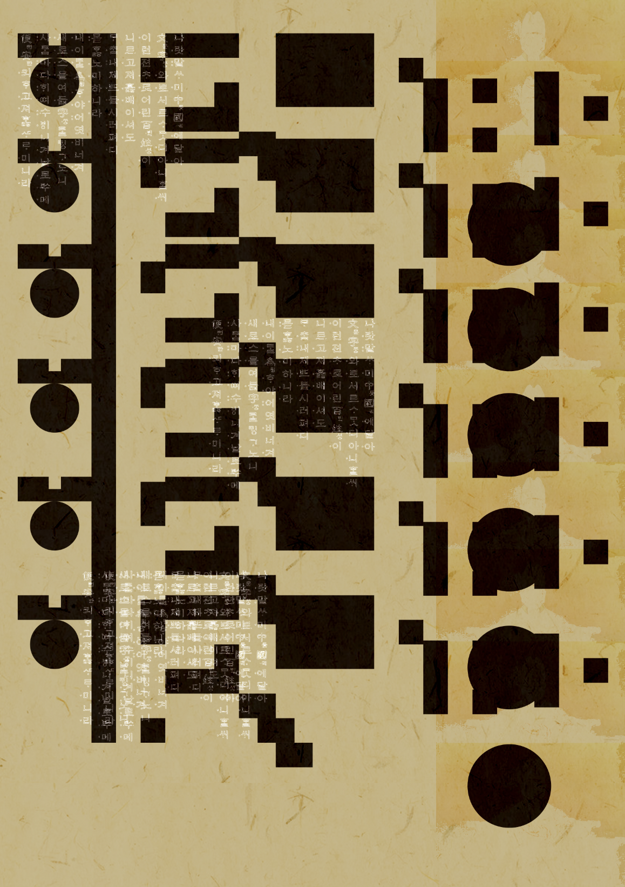

Hangul Madang
2024, Kwon Ho Joon, Graphic Design
한글마당 프로젝트는 한국인도 외국인의 시선처럼 한글을 조형으로써 바라볼 수 있게 도와준다. 한국인의 눈에는 문자로써 익숙한 한글이지만, 한글을 읽을 수 없는 외국인에게는 조형적인 이미지로 다가온다.
한글마당에서는 한글에 익숙해져버린 한국인에게도 외국인들이 한글을 바라보는 시선을 경험해 볼 수 있게 한글의 자음과 모음을 조형 이미지로 변화시키는 것을 중점으로 디자인했다. 한글마당이라는 마당에서 한글은 더 이상 언어가 아닌 조형적 가능성을 보여주게 될 것이다.
또한 외국인들은 한글 간판으로 둘러싸인 한국의 도시 경관을 꽤나 긍정적으로 바라본다. 특히 상가가 밀집한 도심의 한글 간판들이 한글을 읽지 못하는 외국인들에게 어떠한 이미지로 다가올지, 이를 조형 한글인 한글마당을 통해 표현했다.


